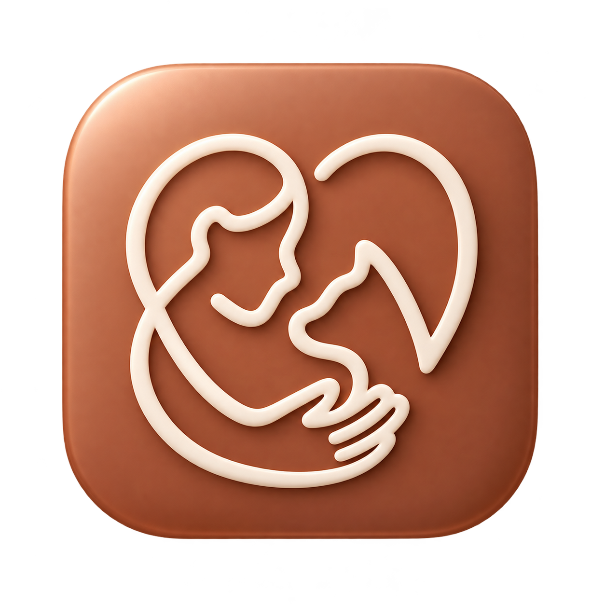

Fresh water is good. A clean bowl is better.
A slimy film builds up in water bowls fast, even when they look fine. A quick daily wash keeps it fresh.
1Rinse and wash the bowl with hot, soapy water every day.
2Refill with fresh water, don't just top it up.
3Drinking a lot more or less than usual? Ask your vet.

PETTO REMINDER · 8:00 AM
Wash the water bowl
Every day. Tap to tick it off.
Free on iOS & AndroidLink in bio